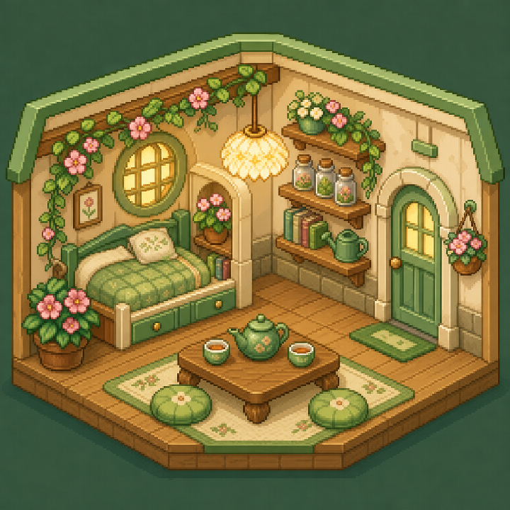

能量 65%
创造 85%
社交 40%
专注 72%
今天适合深度创作，减少碎片社交。只种一颗小种子。
种子会吸收天气、知识和回应，最后长成一只属于你的精灵。
世界、关系、知识、创造和记忆会把水送到生命树。
它不会把你留在这里，而会为你打开一条回到真实生活的小路。
家庭不由血缘限定；一起照顾生命的人，可以长成同一座花园。
Healing Garden / 安全第三空间
两颗记忆种子仍然彼此独立。
理解可以发生，原谅和继续关系不是完成条件。
Living Covenant / 共同守护
仪式尚未开始。
它记录双方真实承诺，不替代任何现实法律关系。
去蒲公英邮局，把一份祝福封进透明种子。
地点、天气、同行者、动作和生活物件会一起成为记忆种子的基因。
见证者 · 还没有留下生命合影
走进世界，接住一颗现实种子。你的行动会回到花园，最后成为一段记忆。
蒲公英不会替你生活，只替你看清风从哪里来。
关系不是列表。每一次回应，都会让一颗种子找到归路。
相遇种子两颗种子仍在各自的风里。
创造之花正在盛开，但根系需要补水。
先记录 7 天真实输入，再种 14 天小种子。
让生命在正确的环境中成长。
输入生命 → 转化数据 → 产生关系 → 影响世界 → 反馈生命。
点一下

让真实世界先发生。
去窗边听一会儿雨。回来时，你不需要证明完成了什么。
蒲公英会留在这里替你看守花园。